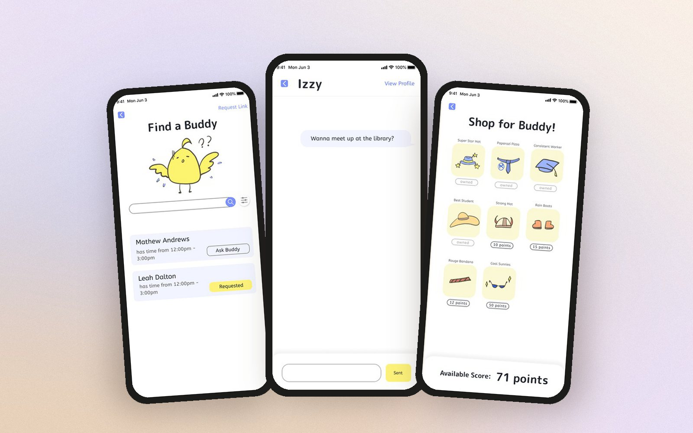
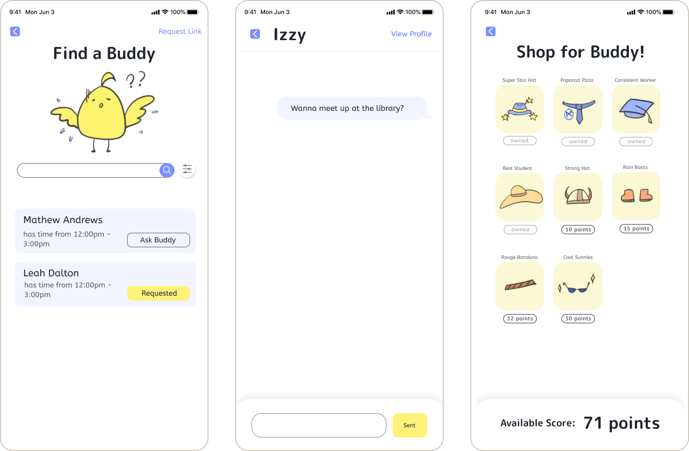
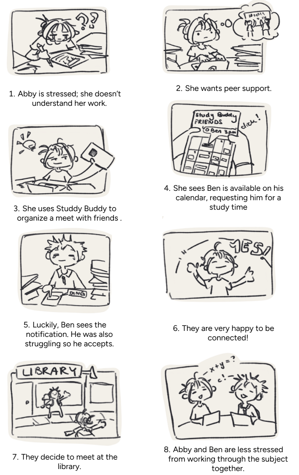
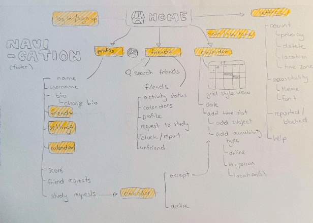
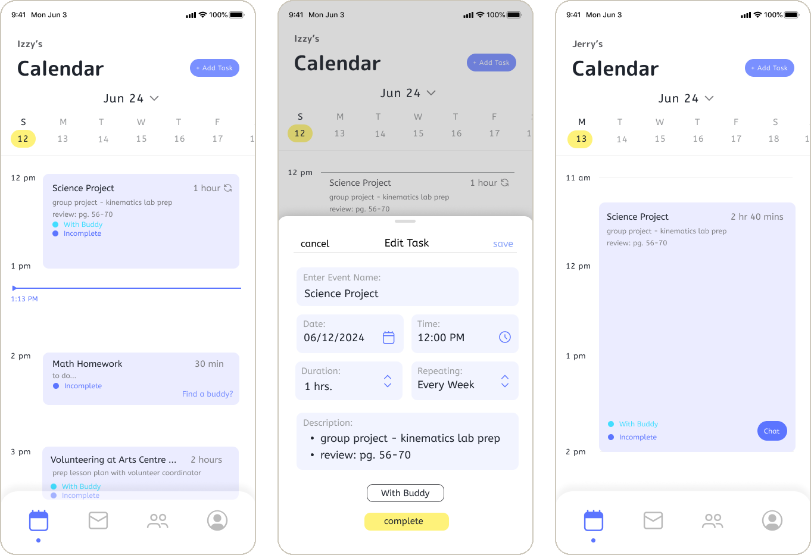
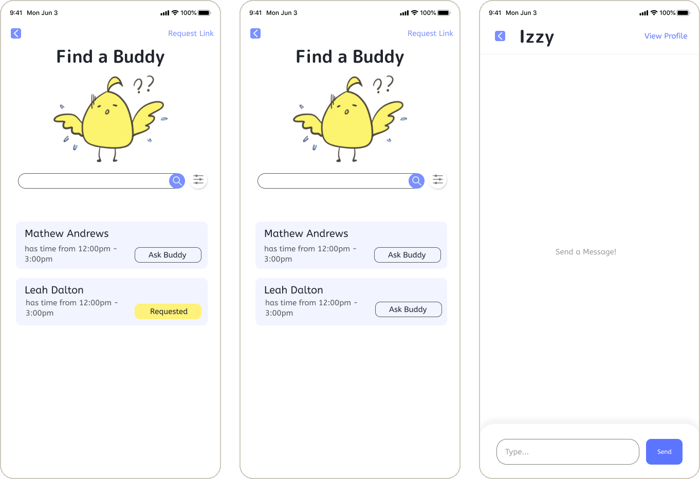
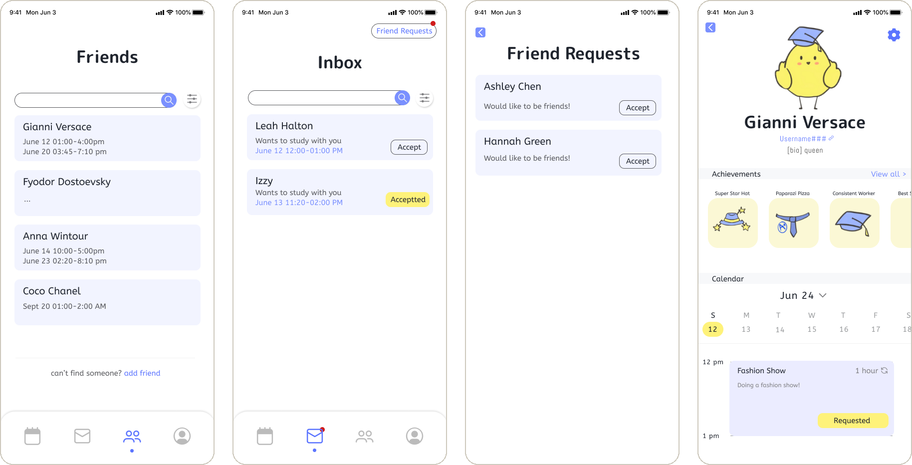
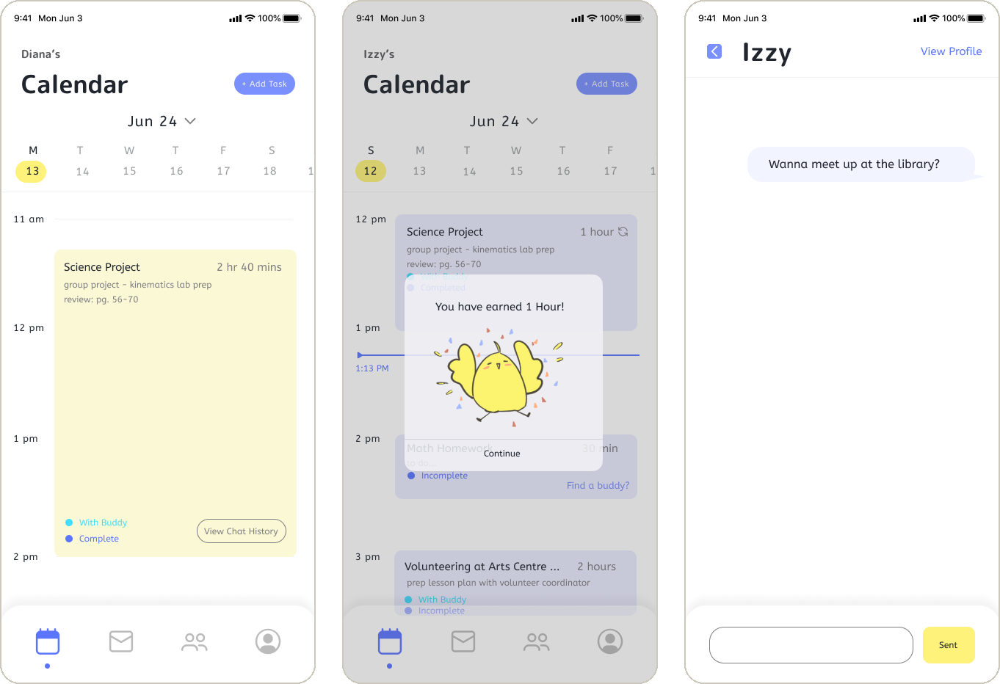
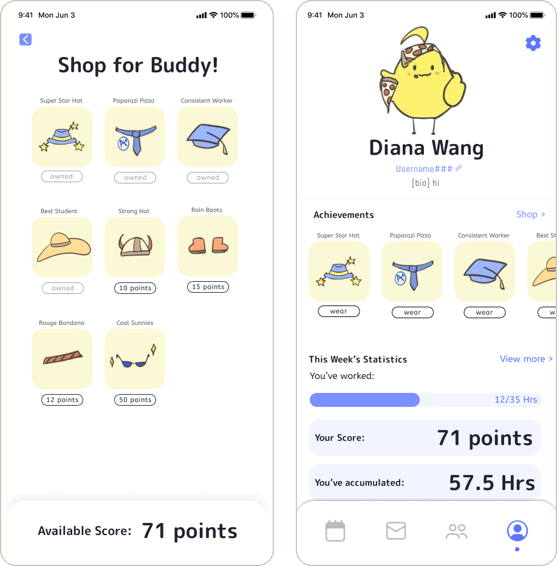
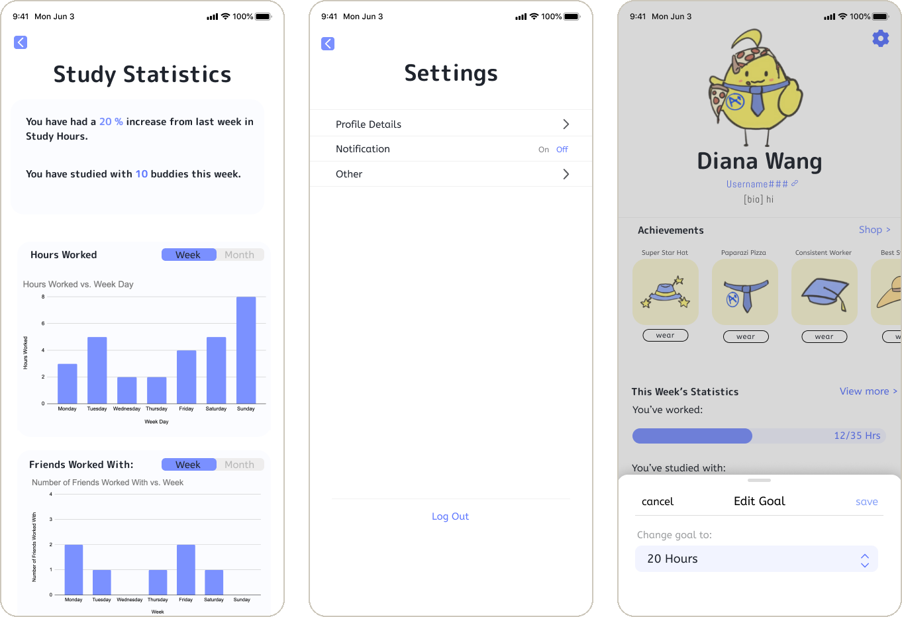

Studdy Buddy
A study-matching app that pairs students by when they want to study, so organizing a group stops being the stressful part.

Overview
After hearing friends talk about school stress and mismatched schedules, I designed Studdy Buddy. The app groups students by when they want to study, which removes the back-and-forth of organizing a study group.
I also added tracking features, which got positive feedback in pilot tests with peers.
The issue
of students report tremendous stress, according to Research.com.
of the students I interviewed named school as one of their main stressors.
Research
I interviewed 7 people at different high schools using think-aloud protocols, then used affinity mapping to find the key pain points.
“…multiple assignments piling up really increases students’ stress, especially if they can’t organize it properly or they have other commitments, like sports…”Ms. Whites, school nurse
“…stigma against mental health makes it really hard to reach out for support… I’d rather get academic help and decrease my stress there…”Tyler, Grade 12 student
Persona: Emily Wang, 16
Overwhelming workload. Disconnected from friends. Running out of time.
Academic help. Peer connections. Time management.
Problem statements → insights
- Need to organize assignments and other commitmentsFlexible calendar or task management system
- Meeting deadlinesAutomated deadline alerts or progress tracker
- Working with friends but struggling to set a timeGroup time-matching or real-time availability
The product
- 01
Find a Buddy
Finds friends with similar free time, so picking a time is easy.
- 02
Chat box
A temporary chat to agree on a place. It closes once both people confirm the task is done, to cut distractions. History is saved.
- 03
Reward system
Study hours and finished tasks earn points to spend on dressing up your Buddy.

Try it yourself
Tap through Studdy Buddy and see how matching and tracking work.
Open in FigmaScenario and navigation


Wireframes
High-fidelity screens for the main flows. After seeing testers quit partway through sign-up, I cut the number of sign-up steps.





